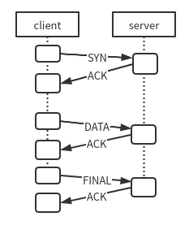

This article is about what I learned from a project where my job was to implement a reliable UDP-based RPC-like protocol. Business detail is not covered.
Assume we accept the job and start to think it through. We might borrow some concepts from TCP. Our first step is to let both sides know when to begin, so we devise the handshakes. TCP uses a three-way handshake to make sure both sides can send data to each other, and as stated in RFC 793, to prevent old duplicate SYNs from confusing the server. But in the project I engaged in, the protocol specified a two-way handshake for connection establishment. The protocol author's intention is unknown. Perhaps a two-way handshake is easier to implement, though it's not reliable at all; think of the situation where the connection initialization from one side gets lost in the network. But reliable establishment does not have to include a three-way handshake; with other approaches, we can also achieve reliability. For example, both ends strike for complete and thorough communication among network delays, packet loss, etc. Or, you make the network so reliable that it doesn't delay or lose packets. In this project, it's acceptable to abort any transaction if unexpected packages arrived. An error-checking, timeout, and recovery mechanism will make sure both sides can finish the transaction. If duplicated SYNs come when the server is not in LISTEN state, the server aborts the communication, returns an error message, and goes back to the LISTEN state.

Secondly, build a state machine. Reliable connections are "stateful". Each time the server receives a message, it looks at the server's current state first and then decides what to do with it. If the message is legal, the server responds with an ACK; otherwise, it returns an error. The client will blocks within a specified timeout until it receives the feedback of the last packet. In our case, we don't have advanced flow control. After the timeout, the client will resend the packet. We can add more control to the process, such as aborting the connection after ten reties.
Thirdly, maintain a sequence number to keep data in order and avoid duplicates. In fact, I think this is a part of the state machine.
The final step is to terminate the connection. When the server receives a final signal, it reassembles the data, processes it, then returns the result. On receiving the final result, the client ends the connection.
Now we have thought it through and wonder why not use TCP in the first place. We might say a custom TCP has fewer states to deal with, thus has better performance. In this case, the protocol did not pursue high performance; instead, it attempted to provides a way for devices to join the system without having to set a particular IP, so it used multicast, a mechanism based on connect-less protocols.
Here is a snippet of the data structures I designed. The use case of the project was specific and simple: the server serves one single client. With a certain number of clients, we might need a hash table to manage the connections.
struct packet
{
uint8_t islastpkt;
uint8_t seq_num;
uint16_t len;
uint8_t *msg;
};
struct context
{
uint8_t done;
uint8_t seq;
struct packet pkts[MAX_SEQ];
} ctx;
Something interesting and something to do: